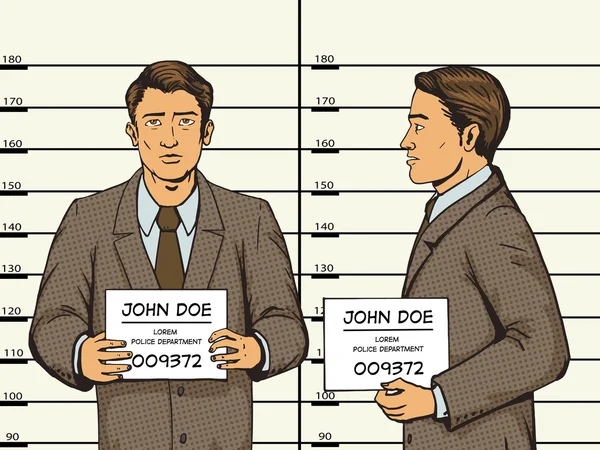

función principal de un CERESO es la de rehabilitar a los reclusos y facilitar su reintegración a la sociedad una vez que han cumplido su condena. Esto implica proporcionar programas de educación, capacitación laboral y servicios de apoyo psicológico y social para ayudar a los reclusos a cambiar su comportamiento y adquirir habilidades que les permitan llevar una vida productiva fuera de la prisión.

Seguridad:Los CERESOs suelen tener diferentes niveles de seguridad, desde prisiones de mínima seguridad hasta prisiones de máxima seguridad, dependiendo del tipo de reclusos que alojan y la peligrosidad de los mismos. Las prisiones de máxima seguridad están diseñadas para reclusos con un historial de comportamiento violento o peligroso.
Condiciones de Vida: Las condiciones de vida en un CERESO pueden variar significativamente de una institución a otra y dependen en gran medida de factores como la financiación, la ubicación y las políticas del gobierno local o estatal. En general, los reclusos tienen horarios regulados, acceso limitado a ciertas comodidades y restricciones en su libertad de movimiento.
Reinserción y Programas de Rehabilitación: Los CERESOs suelen ofrecer una variedad de programas de rehabilitación, que pueden incluir educación, capacitación laboral, terapia individual y grupal, y programas de prevención de la reincidencia delictiva. El objetivo es ayudar a los reclusos a adquirir habilidades y conocimientos que les permitan reintegrarse con éxito en la sociedad después de su liberación.